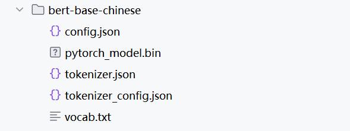
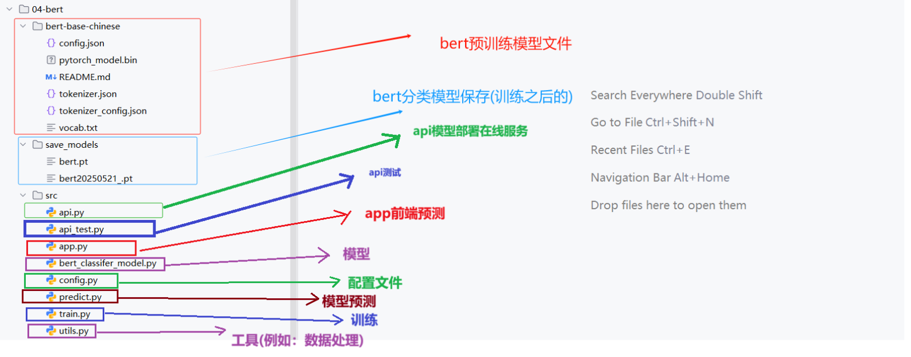
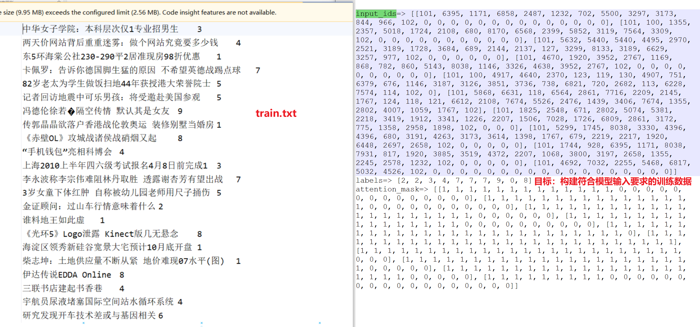
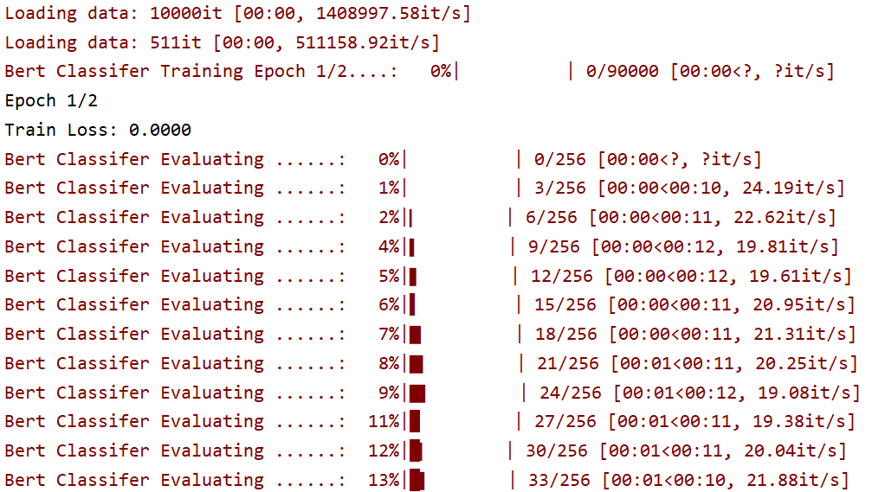

3.3 Bert模型¶
学习目标：
1.能够完成数据集的读取及预处理
2.理解dataSet、dataloader与collate_fn关系
3.能够完成Bert分类模型的构建
4.能够完成Bert模型的训练与测试
5.能够完成Bert分类模型的预测以及部署
1. bert模型的下载¶
目前bert的版本脚本，本次使用中文版的bert，bert下载:https://www.modelscope.cn/models/tiansz/bert-base-chinese/files

2. 代码结构图¶
代码位置：
TMFCode\04-bert

基于Bert进行分类建模思路：
①构建数据处理脚本 对数据train.txt等相关样本文件进行处理，构建符合模型输入要求的训练数据。 处理脚本：TMFCode\04-bert\utils.py

②构建bert + 线性模块的 分类模型
Bert是一个预训练模型，所以我们可以基于bert模型本身加上一个线性分类层来构建我们的下游任务。
③构建训练脚本
④构建预测脚本
⑤构建模型部署、api测试脚本
3. 代码实现¶
3.1 config配置文件¶
代码位置：TMFCode\04-bert\src\config.py
import torch
import datetime
from transformers import BertModel, BertTokenizer, BertConfig
class Config(object):
def __init__(self):
"""
配置类，包含模型和训练所需的各种参数。
"""
self.model_name = "bert" # 模型名称
# 路径
self.root_path = '/Users/duyi/duyi7/HeiMa/我的课程/投满分项目/投满分项目-我的备课/03-code/TouManFenClassifier/'
# 原始数据路径
self.train_datapath = self.root_path + '01-data/train.txt'
self.test_datapath = self.root_path + '01-data/test.txt'
self.dev_datapath = self.root_path + '01-data/dev.txt'
# 类别文档
self.class_path = self.root_path + "01-data/class.txt"
self.class_list = [line.strip() for line in open(self.class_path, encoding="utf-8")] # 类别名单
# 模型训练保存路径
self.model_save_path = self.root_path + "04-bert/save_models/test_bertclassifer_model.pt" # 模型训练结果保存路径
# 模型训练+预测的时候
self.device = torch.device("cuda" if torch.cuda.is_available() else "cpu") # 训练设备，如果GPU可用，则为cuda，否则为cpu
self.num_classes = len(self.class_list) # 类别数
self.num_epochs = 2 # epoch数
self.batch_size = 64 # mini-batch大小
self.pad_size = 32 # 每句话处理成的长度(短填长切)
self.learning_rate = 5e-5 # 学习率
self.bert_path = self.root_path + "/04-bert/bert-base-chinese" # 预训练BERT模型的路径
self.bert_model = BertModel.from_pretrained(self.bert_path) # 加载预训练BERT模型
self.tokenizer = BertTokenizer.from_pretrained(self.bert_path) # BERT模型的分词器
self.bert_config = BertConfig.from_pretrained(self.bert_path) # BERT模型的配置
# 量化模型存放地址
self.bert_model_quantization_model_path = self.root_path + "04-bert/save_models/test_bertclassifer_quantization_model.pt" # 模型训练结果保存路径
if __name__ == '__main__':
conf = Config()
print(conf.bert_model_quantization_model_path)
3.2 utils配置文件¶
代码位置：TMFCode\04-bert\src\utils.py
utils.py
utils脚本主要实现了train.txt相关数据读取加载切分，以及DataSet、DataLoader的构建，最终输出符合模型需求的数据格式。
input_ids=> [[101, 704, 1290, 1957, 2094, 2110, 7368, 8038, 3315, 4906, 2231, 3613, 788, 122, 683, 689, 2875, 4511, 4495, 102, 0, 0, 0, 0], [101, 697, 1921, 817, 5381, 4991, 5520, 1400, 7028, 7028, 6837, 7443, 8038, 976, 702, 5381, 4991, 4955, 4994, 6206, 1914, 2208, 7178, 102]] labels=> [3, 4] attention_mask=> [[1, 1, 1, 1, 1, 1, 1, 1, 1, 1, 1, 1, 1, 1, 1, 1, 1, 1, 1, 1, 0, 0, 0, 0], [1, 1, 1, 1, 1, 1, 1, 1, 1, 1, 1, 1, 1, 1, 1, 1, 1, 1, 1, 1, 1, 1, 1, 1]]
导入工具和配置信息：
import torch
from torch.utils.data import Dataset, DataLoader
from transformers import BertTokenizer
from tqdm import tqdm
import time
from datetime import timedelta
from config import Config
import time
conf=Config()
step1:加载原始数据¶
读取原始数据train.txt等相关文件，进行切分之后，以元组的形式保存样本对到列表中。
train.txt处理为左侧的data列表：
def load_raw_data(file_path):
"""
读取原始数据文件，解析为文本和标签。
参数：
file_path (str): 数据文件路径（如dev2.txt）。
返回：
List[Tuple[str, int]]: 包含(文本, 标签)的列表。
"""
data = []
with open(file_path, "r", encoding="UTF-8") as f:
for line in tqdm(f, desc="Loading data"):
line = line.strip()
if not line:
continue
text, label = line.split("\t")
data.append((text, int(label)))
print(data[:5])
return data
step2:构建自定义数据集¶
我们模型构建包括批计算都基于pytorch框架，所以我们数据要构建成成符合pytorch模型需求的数据集。
class TextDataset(Dataset):
def __init__(self, data):
self.data = data
def __len__(self):
return len(self.data)
def __getitem__(self, idx):
x=self.data[idx][0]
y=self.data[idx][1]
return x, y
step3:构建dataloader¶
构建dataloader用于后续建模中batch数据输入到模型中，进行loss的计算以及参数的迭代优化。
def build_dataloader():
"""
构建DataLoader，整合数据加载、Dataset和collate_fn。
参数：
file_path (str): 数据文件路径。
batch_size (int): 批次大小。
padding_size (int): 统一padding长度（默认28）。
device (str): 设备（"cpu"或"cuda"）。
返回：
DataLoader: 用于训练的DataLoader。
"""
# 加载原始数据
train_data = load_raw_data(conf.train_path)
test_data = load_raw_data(conf.test_path)
dev_data = load_raw_data(conf.dev_path)
# 创建 Dataset
train_dataset = TextDataset(train_data)
dev_dataset = TextDataset(dev_data)
test_dataset = TextDataset(test_data)
# 创建 DataLoader
train_dataloader = DataLoader(train_dataset,batch_size=conf.batch_size,shuffle=False,collate_fn=collate_fn)
test_dataloader = DataLoader(test_dataset, batch_size=conf.batch_size, shuffle=False, collate_fn=collate_fn)
dev_dataloader = DataLoader(dev_dataset, batch_size=conf.batch_size, shuffle=False, collate_fn=collate_fn)
return train_dataloader,test_dataloader,dev_dataloader
step4:构建collate_fn¶
collate_fn是dataloader为了解决进入模型训练的数据不符合要求的进一步处理，例如batch级别数据处理长度、数据数值化等。
def collate_fn(batch):
"""
对batch数据进行padding处理
参数:
batch: 包含(文本, 标签)元组的batch数据
返回:
tuple: 包含处理后的input_ids, attention_mask和labels的元组
"""
texts, labels = zip(*batch)
# 对文本进行padding
text_tokens = conf.tokenizer.batch_encode_plus(texts, padding=PaddingStrategy.MAX_LENGTH, max_length=conf.pad_size,
pad_to_max_length=True)
input_ids = text_tokens['input_ids']
attention_mask = text_tokens['attention_mask']
# 将token_ids_list转为tensor
input_ids = torch.tensor(input_ids)
attention_mask = torch.tensor(attention_mask)
labels = torch.tensor(labels)
return input_ids, attention_mask, labels
step5:验证数据处理完整逻辑¶
if __name__ == "__main__":
# 构建 DataLoader
train_dataloader,test_dataloader,dev_dataloader = build_dataloader()
# #遍历 DataLoader
for batch in train_dataloader:
input_ids, attention_mask, labels = batch
print("input_ids=>",input_ids.tolist())
print("labels=>",labels.tolist())
print("attention_mask=>",attention_mask.tolist())
breakpoint()
输入日志：
input_ids=> [[101, 704, 1290, 1957, 2094, 2110, 7368, 8038, 3315, 4906, 2231, 3613, 788, 122, 683, 689, 2875, 4511, 4495, 102, 0, 0, 0, 0], [101, 697, 1921, 817, 5381, 4991, 5520, 1400, 7028, 7028, 6837, 7443, 8038, 976, 702, 5381, 4991, 4955, 4994, 6206, 1914, 2208, 7178, 102]]
labels=> [3, 4]
attention_mask=> [[1, 1, 1, 1, 1, 1, 1, 1, 1, 1, 1, 1, 1, 1, 1, 1, 1, 1, 1, 1, 0, 0, 0, 0], [1, 1, 1, 1, 1, 1, 1, 1, 1, 1, 1, 1, 1, 1, 1, 1, 1, 1, 1, 1, 1, 1, 1, 1]]
3.3bert_classifer模型构建¶
代码位置：TMFCode\04-bert\src\bert_classifer_model.py
import torch
import torch.nn as nn
from transformers import BertModel
from config import Config
from utils import build_dataloader
conf = Config()
class BertClassifier(nn.Module):
"""
BERT + 全连接层的分类模型。
"""
def __init__(self):
"""
初始化模型，包括BERT和全连接层。
"""
super(BertClassifier, self).__init__()
self.bert = BertModel.from_pretrained(conf.bert_path)
self.fc = nn.Linear(conf.hidden_size, conf.num_classes)
def forward(self, input_ids, attention_mask):
_, pooled = self.bert(input_ids=input_ids, attention_mask=attention_mask, return_dict=False)
out = self.fc(pooled)
return out
3.4 train模型训练及验证¶
代码位置：
TMFCode\04-bert\src\train.py
导包以及相关配置：
import torch
import torch.nn as nn
from torch.optim import AdamW
from sklearn.metrics import classification_report, f1_score, accuracy_score, precision_score, recall_score
from tqdm import tqdm
from config import Config
from utils import build_dataloader
from bert_classifer_model import BertClassifier
# 加载配置对象，包含模型参数、路径等
conf = Config()
# 忽略的警告信息
import warnings
warnings.filterwarnings("ignore")
step1:model2train训练函数实现¶
def model2train():
"""
训练 BERT 分类模型并在验证集上评估，保存最佳模型。
参数：无显式参数，所有配置通过全局 conf 对象获取。
返回：无返回值，训练过程中保存最佳模型到指定路径。
"""
# 1、加载训练，验证，测试的数据
train_dataloader, dev_dataloader, test_dataloader = build_dataloader()
# 2、定义训练参数，包括：设备，轮数，学习率，模型保存路径
device = conf.device
epochs = conf.num_epochs
lr = conf.learning_rate
model_save_path = conf.model_save_path
# 3、初始化bert分类模型
model = BertClassifier()
# 4、将模型移动到指定的设备
model.to(device)
# 5、定义优化器 和 损失函数，一般用AdamW，损失函数
optimizer = AdamW(model.parameters(), lr=lr)
loss_fn = nn.CrossEntropyLoss()
# 6、初始化F1分数，用于保存最好的模型
best_f1 = 0.0
# 7、遍历每个训练轮次（每次需要设置训练模式，累计损失，预存训练集测试和真实标签）
for epoch in range(epochs):
# 7.1 设置模型为训练模式
model.train()
# 7.2 初始化累计损失，初始化训练集预测和真实标签
total_loss = 0.0
train_preds, train_labels = [], [] # 存储训练集预测和真实标签
# 8、遍历训练DataLoader 进行模型训练
for i, batch in enumerate(tqdm(train_dataloader, desc="Training on train set")):
# 8.1 提取批次数据并移动到设备
input_ids, attention_mask, labels = batch
input_ids = input_ids.to(device)
attention_mask = attention_mask.to(device)
labels = labels.to(device)
# 8.2 清空优化器梯度
optimizer.zero_grad()
# 8.3 前向传播：模型预测
outputs = model(input_ids, attention_mask)
# 8.4 计算损失
loss = loss_fn(outputs, labels)
# 8.5 反向传播：计算梯度
loss.backward()
# 8.6 参数更新：根据梯度更新模型参数
optimizer.step()
# 8.7 累计损失
total_loss += loss.item()
# 8.8 获取预测结果（最大logits对应的类别）
y_pred_list = torch.argmax(outputs, dim=1)
# 8.9 存储预测和真实标签，用于计算训练集指标
train_preds.extend(y_pred_list.cpu().tolist())
train_labels.extend(labels.cpu().tolist())
# 8.10 每10个批次，计算训练集指标
if (i + 1) % 10 == 0 or i == len(train_dataloader) - 1:
# 8.11 计算准确率和f1值
acc = accuracy_score(train_labels, train_preds)
f1 = f1_score(train_labels, train_preds, average='macro')
# 8.12 获取batch_count，并计算平均损失
batch_count = i % 10 + 1
avg_loss = total_loss / batch_count
# 8.13 打印训练信息
print(
f"\nEpoch: {epoch + 1}, Batch: {i + 1}, Loss: {avg_loss:.4f}, acc:{acc:.4f}, f1:{f1:.4f}")
# 8.14 清空累计损失和预测和真实标签
total_loss = 0.0
train_preds, train_labels = [], []
# 8.15 每100个批次，计算验证集指标，打印，保存模型
if (i + 1) % 100 == 0 or i == len(train_dataloader) - 1:
# 8.16 计算在测试集的评估报告，准确率，精确率，召回率，f1值
report, f1score, accuracy, precision, recall = model2dev(model, dev_dataloader, device)
print("验证集评估报告：\n", report)
print(
f"验证集f1，accuracy, precision, recall: {f1score:.4f}, {accuracy:.4f}, {precision:.4f}, {recall:.4f}")
# 8.17 将模型设置为训练模式
model.train()
# 8.18 如果验证F1分数优于历史最佳，保存模型
if f1score > best_f1:
# 8.19 更新历史最佳F1分数
best_f1 = f1score
# 8.20 保存模型
torch.save(model.state_dict(), model_save_path)
print("保存模型, f1score:", best_f1)
step2:model2dev验证函数实现¶
def model2dev(model, data_loader, device):
"""
在验证或测试集上评估 BERT 分类模型的性能。
参数：
model (nn.Module): BERT 分类模型。
data_loader (DataLoader): 数据加载器（验证或测试集）。
device (str): 设备（"cuda" 或 "cpu"）。
返回：
tuple: (分类报告, F1 分数, 准确度, 精确度，召回率)
- report: 分类报告（包含每个类别的精确度、召回率、F1 分数等）。
- f1score: 微平均 F1 分数。
- accuracy: 准确度。
- precision: 微平均精确度
- recall: 微平均召回率
"""
# 1. 设置模型为评估模式（禁用 dropout 和 batch norm）
model.eval()
# 2. 初始化列表，存储预测结果和真实标签
all_preds, all_labels = [], []
# 3. 禁用梯度计算以提高效率并减少内存占用
with torch.no_grad():
# 4. 遍历数据加载器，逐批次进行预测
for i, batch in enumerate(tqdm(data_loader, desc="Evaluating model on dev set")):
# 4.1 提取批次数据并移动到设备
input_ids, attention_mask, labels = batch
input_ids = input_ids.to(device)
attention_mask = attention_mask.to(device)
labels = labels.to(device)
# 4.2 前向传播：模型预测
outputs = model(input_ids, attention_mask=attention_mask)
# 4.3 获取预测结果（最大 logits 对应的类别）
y_pred_list = torch.argmax(outputs, dim=1)
# 4.4 存储预测和真实标签
all_preds.extend(y_pred_list.cpu().tolist())
all_labels.extend(labels.cpu().tolist())
# 5. 计算分类报告、F1 分数、准确率，精确率，召回率
report = classification_report(all_labels, all_preds)
f1score = f1_score(all_labels, all_preds, average='macro')
accuracy = accuracy_score(all_labels, all_preds)
precision = precision_score(all_labels, all_preds, average='macro')
recall = recall_score(all_labels, all_preds, average='macro')
# 6. 返回评估结果
return report, f1score, accuracy, precision, recall
step3:日志效果¶
if __name__ == '__main__':
# 主程序入口
model2train()

3.5 预测脚本¶
代码位置：
TMFCode\04-bert\src\predict_fun.py
以下为预测函数：
import torch
from transformers.utils import PaddingStrategy
from bert_classifer_model import BertClassifier
from config import Config
# 初始化配置
conf = Config()
# 1、设置设备参数
device = conf.device
# 2、定义模型
model = BertClassifier()
# 3、指定模型到设备
model.to(device)
# 4、加载模型参数
model.load_state_dict(torch.load(conf.model_save_path))
# 5、设置模型为评估模式
model.eval()
# 6、定义predict_fun函数
def predict_fun(data_dict):
"""
预测函数
:param data_dict: {"text":"状元心经：考前一周重点是回顾和整理"}
:return: {"text":"状元心经：考前一周重点是回顾和整理", "pred_class":"education"}
"""
# 6.1 获取文本
text = data_dict['text']
# 6.2 将文本转为id
text_tokens = conf.tokenizer.batch_encode_plus([text], padding=PaddingStrategy.MAX_LENGTH, max_length=conf.pad_size,
pad_to_max_length=True)
# 6.3 获取input_ids和attention_mask
input_ids = text_tokens['input_ids']
attention_mask = text_tokens['attention_mask']
# 6.4 将input_ids和attention_mask转为tensor, 并指定到设备
input_ids = torch.tensor(input_ids).to(device)
attention_mask = torch.tensor(attention_mask).to(device)
# 6.5 设置不进行梯度计算
with torch.no_grad():
# 6.7 前向传播
output = model(input_ids, attention_mask)
# 6.8 进行预测
output = torch.argmax(output, dim=1)
# 6.9 获取预测结果
pred_idx = output.item()
# 6.10 获取类别
pred_class = conf.class_list[pred_idx]
# 6.11 将预测结果添加到data_dict中
data_dict['pred_class'] = pred_class
# 6.12 返回data_dict
return data_dict
输入日志：
预测结果：
{'text': '中华女子学院：本科层次仅1专业招男生', 'pred_class': 'education'}
3.6 模型部署¶
# 模型部署
import fasttext
import jieba
from predict_fun import predict
from flask import Flask, request,jsonify
app = Flask(__name__)
@app.route('/predict', methods=['POST'])
def predict_api():
# 获取请求数据
data = request.get_json()
#预测
print("-------------预测结果------------")
result=predict(data)
print(result)
return jsonify(result)
if __name__ == '__main__':
app.run(host='0.0.0.0',port=8003)
启动日志：
C:\Lucky_dt\1_sw\10_anaconda\install\envs\TMF\python.exe C:\Lucky_dt\2_bj\22AI_BJStudents\TMFCode\04-bert\src\api.py
* Serving Flask app 'api'
* Debug mode: off
WARNING: This is a development server. Do not use it in a production deployment. Use a production WSGI server instead.
* Running on all addresses (0.0.0.0)
* Running on http://127.0.0.1:8003
* Running on http://26.26.26.1:8003
3.7 接口测试¶
import requests
import time
# 定义预测接口地址
url = 'http://127.0.0.1:8003/predict'
# 构造请求数据
data = {'text': "中华女子学院：本科层次仅1专业招男生"}
# 记录开始时间
start_time = time.time()
# 发送 POST 请求
try:
response = requests.post(url, json=data)
# 计算耗时（毫秒）
elapsed_time = (time.time() - start_time) * 1000
print(f"请求耗时: {elapsed_time:.2f} ms")
# 检查响应状态
if response.status_code == 200:
result = response.json()
print(f"预测结果: {result['pred_class']}")
else:
print(f"请求失败: {response.status_code}, {response.json()['error']}")
except Exception as e:
print(f"请求出错: {str(e)}")
输出日志：
C:\Lucky_dt\1_sw\10_anaconda\install\envs\TMF\python.exe C:\Lucky_dt\2_bj\22AI_BJStudents\TMFCode\04-bert\src\api_test.py
请求耗时: 60.96 ms
预测结果: education
3.8 app前端预测¶
代码位置：TMFCode\04-bert\src\app.py